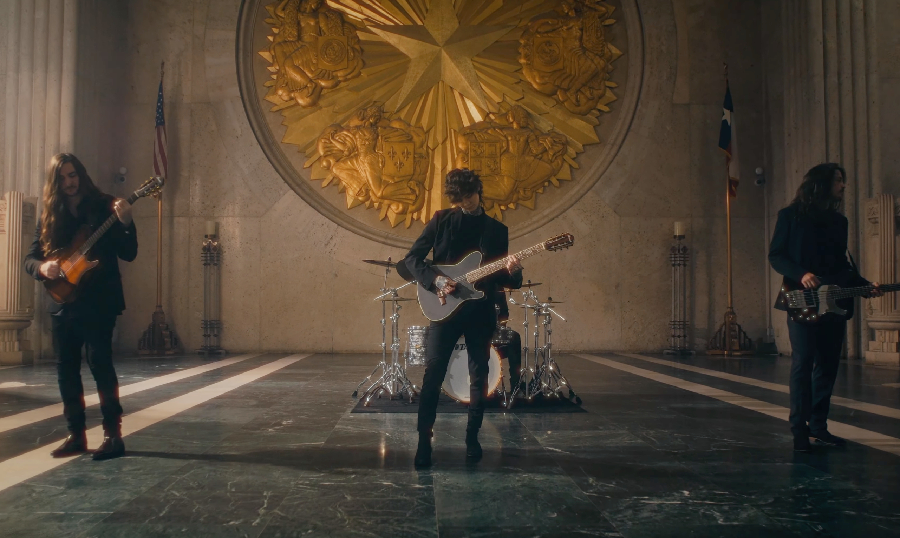
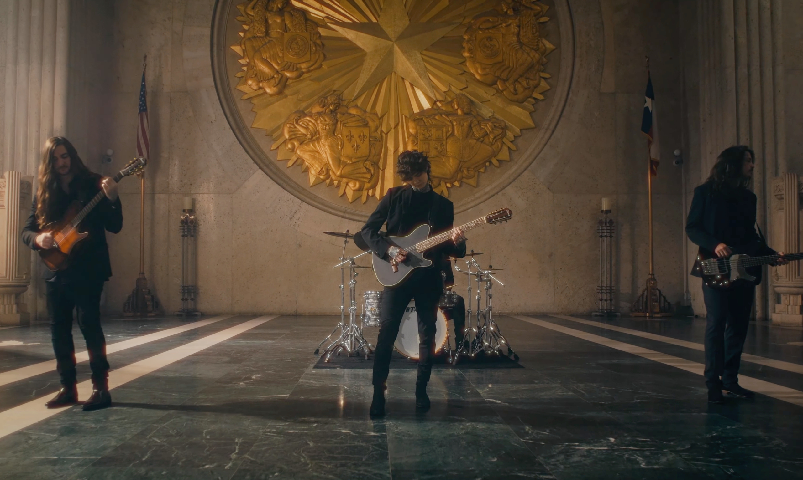

2010年成立於美國德州達拉斯的 Polyphia 是由當時平均年齡僅16歲左右的年輕小夥子們組成，創團成員為實力偶像派吉他手 － 媽媽是台灣人的台美混血 Timothy Henson 以及 Scott LePage 帥哥鼓手 Brandon Burkhalter（於2014年離開樂團並於隔年短暫回歸後在2016年再度離團）主唱 Lane Duskin（於2012年離團）。成為純演奏團的他們在主唱離開後找到了貝斯手 Clay Gober，接著在2016年迎來了現在的新鼓手 Clay Aeschliman。 他們結合了 Fusion、超鏘的420文化（IG常常有各種抽爆影片並還推出Grinder周邊），爵士、前衛金屬以及多采多姿的搖滾、電子音樂、Vaporwave 等元素，並趕上了當年金屬樂團中最盛行的 Djent 風潮，成為至今最廣為人知的新生代前衛金屬演奏團之一。在2013年發行首張EP專輯《Inspire》與上傳一系列的 Playthrough 影片至 Youtube 後，立即在網路上颳起了旋風。
接著 Polyphia 在2015年發行的首張專輯《Muse》中廣受好評，聽那潮到出水的編曲手法、如初生之犢不畏虎般，那股年輕氣盛的狂妄炫技嶄露在戲份滿點的兩把吉他上，貝斯跟鼓當然也沒馬虎，而這種特色徹底帶起了新風潮，至今仍屹立不搖。
此外，他們前後找來了各種人氣樂手與前輩助陣，有現在單飛出道的 Jason Richardson （其前後擔任 Born of Osiris、Chelsea Grin、All Shall Perish 的吉他手）Aaron Marshall（Intervals）還有來自 Chon 的吉他手 Mario Camarena 以及 Erick Hansel，Rick Graham、Nick Johnston 與 Jakub Żytecki。
 
